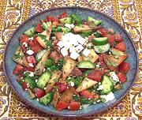

|
Tajik Bread SaladTajikistan - Qurotob | ||||
| Makes: Effort: Sched: DoAhead: |
2-3/4 # ** 1-1/4 hr Most |
This salad is very popular in Tajikistan, and is often served on a hollowed board for guests to take as they please. It is usually accompanied by hot Non bread (Naan). | |||
|
|
3-1/2 ar ------- 1-1/2 10 3 1/3 1/3 ------- 1 2 1-1/2 1/2 5 1/3 ------- 5 all |
oz --- # oz c c ---- t T T t T t --- oz |
Flatbread (1) Olive Oil -- Salad Tomatoes, ripe Cucumbers (2) Scallions Cilantro Leaf Dill, fresh -- Dressing Coriander Seed Lemon Juice Rice Vinegar Sugar Olive Oil ExtV Salt -- Topping Feta Cheese (3) Flatbreads |
Do Ahead (30 min - 7 min work)
|